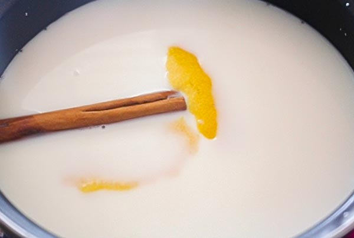
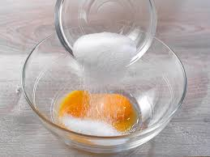
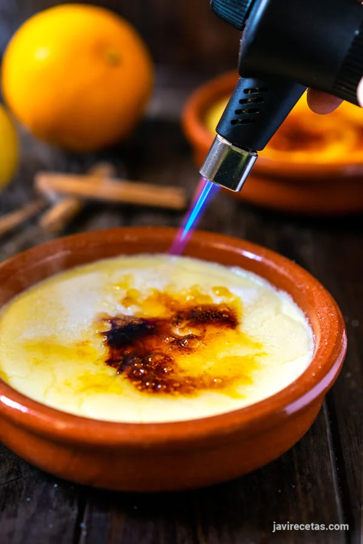

Ponemos en un cazo la lehe con la piel del limon y la cena, y cuado hierva lo sacamos del fuego, y lo dejamos reposar 2 minutos y le sacamos la canela y la piel del limon.
En un bol aparte batimos la yema de huevo con una cucharada de azúcar y le añadimos la maicena y mezclamos bien hasta que no queden grumos.
Ahora añadimos poco a poco la leche caliente al bol mientras remueves para que no se cuaje el huevo.

Vuelve a poner la mezcla en el cazo a fuego lento y cocina removiendolo constantemente hasta que se espese.

Cuando tenga textura cremosa lo echas en una cazuelita o cuenco y lo dejamos enfriar primero a temperatura ambiente y luego, refrigeramos mínimo 1 hora en la nevera.

Espolvoreamos 1 cucharadita de azúcar por encima y quemamos con un soplete de cocina o bajo el grill del horno hasta formar una capa crujiente.
